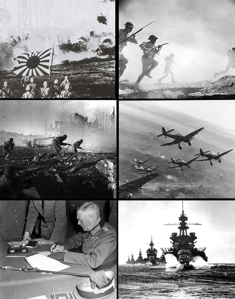

เริ่มสงคราม

สงครามโลกครั้งที่ 2 เริ่มต้นอย่างเป็นทางการในวันที่ 1 กันยายน ค.ศ. 1939 เมื่อเยอรมนีส่งกองทัพบุกประเทศโปแลนด์ เยอรมนีใช้ยุทธวิธีการรบอย่างรวดเร็ว ทำให้สามารถยึดพื้นที่ได้อย่างรวดเร็ว เมื่ออังกฤษและฝรั่งเศสเห็นว่าเยอรมนีเป็นภัยคุกคาม จึงประกาศสงครามกับเยอรมนีในวันที่ 3 กันยายน ค.ศ. 1939 จากเหตุการณ์นี้ทำให้ความขัดแย้งที่เดิมอยู่ในยุโรปขยายกลายเป็นสงครามครั้งใหญ่ระหว่างหลายประเทศ